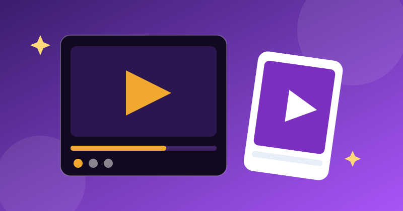

5 Best Free Screen Recorder Apps for Android (2026)

Whether you record gameplay, make a tutorial or capture a bug to show a developer, a good screen recorder should be invisible: tap, record, save — no watermark stamped across your video, no time limit cutting you off mid-sentence. We tested the most popular free screen recorders on a mid-range Android phone for one question: which one records clean, usable video without pushing you into a paid plan?
What we tested
- Watermark — does the free version stamp its logo on your video?
- Audio — internal audio (Android 10+) and microphone, without echo or noise
- Quality & limits — resolution, frame rate and any recording time limit
- Everyday use — floating controls, pause/resume, facecam, basic trimming
1. XRecorder — best free recorder overall
XRecorder records up to 1080p at 60fps with no watermark and no recording time limit on the free tier, supports internal audio on Android 10 and above, and includes a floating control ball, facecam and a basic video editor for trimming. Ads appear in the app itself, but not in your recordings. For most people, this is the answer — install it and forget about it.
2. AZ Screen Recorder — best for long, reliable recording
AZ Screen Recorder is the old reliable of this category: stable recording, no root needed, no time limit, and a clean set of options for resolution, bitrate and frame rate. The free version shows ads and some extras (like the magic button and GIF conversion) are paid, but the core recorder is solid and it rarely crashes mid-session — which matters more than features when you are an hour into a recording.
3. Your phone's built-in recorder — best if you already have one
Since Android 11, most phones ship with a screen recorder in the quick-settings panel (Samsung, Pixel, Xiaomi and others all include one). It records clean video with no watermark, no ads and no install — and it can capture internal audio on supported devices. Check your quick settings before installing anything: for simple captures, the built-in recorder is often all you need.
4. ADV Screen Recorder — best simple, lightweight option
ADV Screen Recorder keeps things minimal: two engines to choose from, front and back camera overlay, and the ability to draw on screen while recording — handy for tutorials. It is lighter than the big-name recorders, though its interface looks dated and advanced features like high frame-rate recording are limited.
5. Mobizen Screen Recorder — best for creators who stream
Mobizen adds live streaming and a clean editing mode on top of solid recording, which suits gamers and creators who want to go live from their phone. The trade-off is a watermark on the free tier and more prompts to upgrade than the others on this list — worth it only if you actually use the streaming features.
Quick comparison
| Recorder | Watermark (free) | Internal audio | Best for |
|---|---|---|---|
| XRecorder | None | Yes (Android 10+) | Free, everyday recording |
| AZ Screen Recorder | None | Yes (Android 10+) | Long, stable sessions |
| Built-in recorder | None | Yes (most phones) | Quick captures, no install |
| ADV Screen Recorder | None | Yes (Android 10+) | Lightweight tutorials |
| Mobizen | Yes (free tier) | Yes (Android 10+) | Streaming + editing |
Note: prices and free-tier features change often — always check the Play Store listing before installing. We never link to cracked or modded apps.